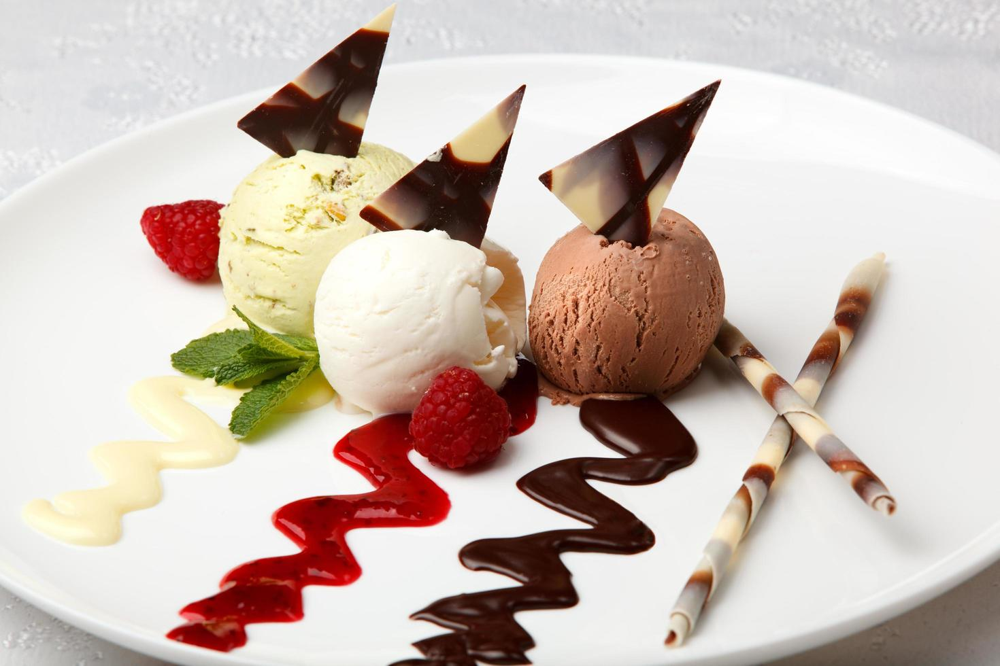

Sobre a Eiscreme
Em 2018, em uma cidade vibrante e cheia de cultura, duas amigas apaixonadas por gastronomia decidiu abrir a
"Eiscreme", uma sorveteria que prometia revolucionar a forma como as pessoas experimentavam sorvete. Com a
missão de oferecer produtos de alta qualidade, e se destacou no mercado pela sua abordagem artesanal e pelo
uso de ingredientes frescos e naturais.
As fundadoras, eram especialistas em culinária e nutrição. Elas estavam determinadas a criar sabores únicos
que não apenas agradassem ao paladar, mas que também fossem saudáveis. Após meses de pesquisa e
desenvolvimento, elas lançaram uma linha de sorvetes livres de conservantes e corantes artificiais,
utilizando apenas frutas da estação, laticínios orgânicos e adoçantes naturais.